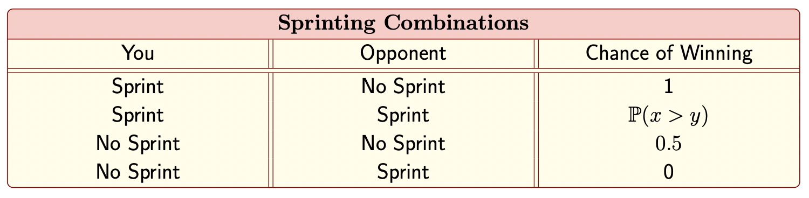
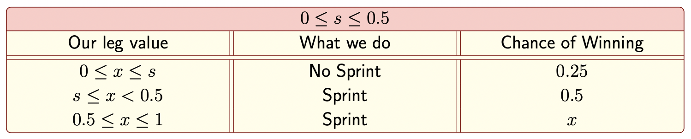
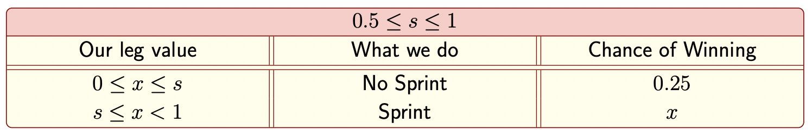
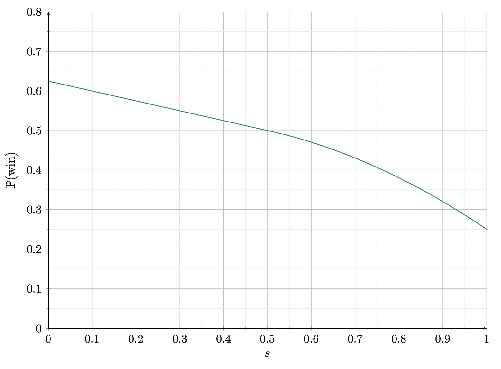

Let $X\stackrel{\text{iid}}{\sim}\text{Unif}(0,1)$ and $Y\stackrel{\text{iid}}{\sim}\text{Unif}(0,1)$ be the random variables representing the decimal representation of you and your opponent's leg state, respectively. Let $x$ and $y$ be fixed values chosen from $X$ and $Y$. Then each combination of your decisions for sprinting/no sprinting (and our winning probabilities for each combination) are given below.

Let's start with the unknown case where we both sprint. We can say:
$$\mathbb{P}(X>y)=1-\mathbb{P}(X\leq y)=1-y$$
Where we made use of the cumulative distribution function for a uniform distribution on $[0,1]$. Since we are in the case where both you and your opponent are sprinting, we must condition on the fact that $Y\geq 0.5$. The conditional probability density function of $Y$ is:
$$f_{Y|\text{sprint}}(y)=\frac{f_Y(y)}{\mathbb{P}(Y\geq 0.5)}=\frac{1}{0.5}=2$$
Where we used the known probability density function for a uniform distribution for $f_Y(y)$. And so averaging on all possible speeds for $y$ (where we assume that our opponent is sprinting) gives us the desired winning probability in this case:
\begin{align*}
\mathbb{P}(\text{Win}\;|\;\text{Both sprint}) & =\int_{0.5}^1 \mathbb{P}(X>y)\times f_{Y|\text{sprint}}(y)dy
\\ & =\int_{0.5}^1 (1-y)\times 2dy
\\ & = 0.25
\end{align*}
So now let's figure out what our winning chances are. If I choose not to sprint, the probability that I win is:
$$\mathbb{P}(\text{Win}\;|\;\text{Never sprint})=0.5(0.5)+0.5(0)=0.25$$
If I choose to sprint, the chances that I win are:
$$\mathbb{P}(\text{Win}\;|\;\text{Always sprint})=0.5(1)+0.5(0.25)=0.625$$
Which is true for all possible values of $x$. So it seems like I should always choose to sprint.
But let's consider another strategy: suppose we only sprint if our leg state is above some threshold value, call it $s\in[0,1]$, i.e we sprint if and only if $x\geq s$. Then we consider two cases:
Case 1: You sprint ($X=x\geq s$). Your opponent can choose not to sprint (with probability $0.5$) in which case you win. If your opponent does sprint, then $Y\geq 0.5$, and so we must find:
$$\mathbb{P}(Y< x\;|\;Y\geq 0.5)=\frac{\mathbb{P}(0.5\leq Y< x)}{\mathbb{P}(Y\geq 0.5)}=\frac{\mathbb{P}(Y\leq x)-\mathbb{P}(Y\leq 0.5)}{\mathbb{P}(Y\geq 0.5)}=\frac{x-0.5}{0.5}=2x-1$$
In which case, our winning probability is:
$$\mathbb{P}(\text{Win}\;|\;X=x\;\cap\;\text{We sprint})=0.5(1)+0.5(2x-1)=x$$
Case 2:You do not sprint ($X=x< s$). For this, if we want to win, we must hope our opponent does not sprint. If so, either of us will be equally likely to win. And so:
$$\mathbb{P}(\text{Win}\;|\;X=x\;\cap\;\text{No sprint})=\mathbb{P}(Y< 0.5)\times 0.5=0.25$$
Now we must integrate over $x$, and we consider two regimes depending on whether our optimal value for $s$ is above or below $0.5$:
Regime 1: $0\leq s\leq 0.5$. Summarizing what we found above is shown in the table below. For the second row, since $x<0.5$, and our opponent only sprints if $y>0.5$, we would lose if he chose to sprint. If he chooses not to sprint (with probability $0.5$), we would win; hence our chance of winning is $0.5$ in that case.

And so we have:
\begin{align*}
\mathbb{P}(\text{Win}) & = \int_0^s 0.25dx+\int_s^{0.5}0.5dx+\int_{0.5}^1 xdx= \frac 58-\frac s4
\end{align*}
Regime 2: $0.5\leq s\leq 1$. Summarizing the results above, we get:

$$\mathbb{P}(\text{Win})=\int_0^s 0.25dx+\int_s^1xdx=\frac s4+\frac 12-\frac{s^2}{2}$$
So in total:
$$\mathbb{P}(\text{Win})=\begin{cases}
\frac 58-\frac s4 & 0\leq s\leq 0.5
\\ \frac s4+\frac 12-\frac{s^2}{2} & 0.5\leq s\leq 1
\end{cases}$$
This piecewise function plotted is shown below:

Notice the our highest chance of winning occurs when $s=0$, and the probability coincides with our previous value of $0.625$. Therefore, we can safely determine that our optimal strategy should be to always sprint no matter how our legs are feeling. Adopting this strategy, our chances of winning is $\boxed{0.625}$.